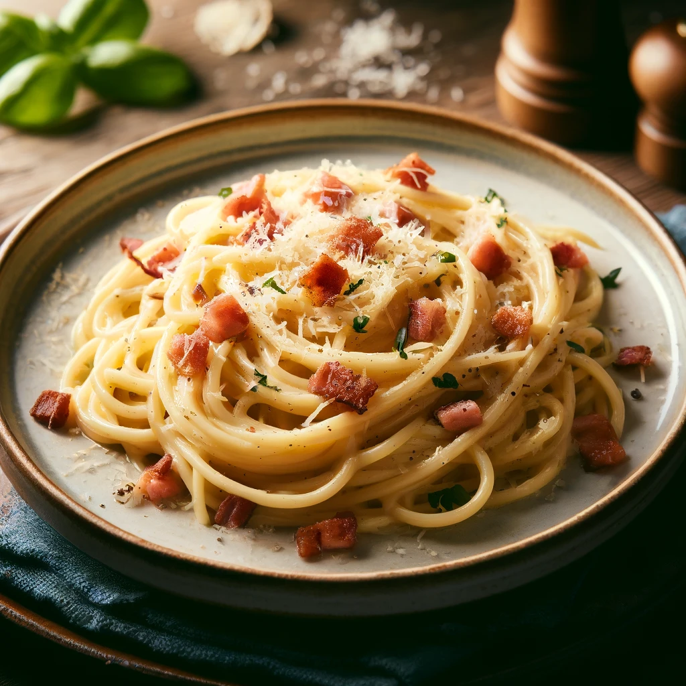

Zutaten
- 400 g Spaghetti
- 150 g Pancetta oder Speck, gewürfelt
- 3 große Eier
- 75 g Parmesan, frisch gerieben
- Schwarzer Pfeffer
- Salz
Anleitung
- Spaghetti in einem großen Topf mit kochendem Salzwasser nach Packungsanweisung al dente kochen.
- In einer Pfanne die Pancetta bei mittlerer Hitze knusprig braten.
- In einer Schüssel Eier und Parmesan mischen und gut verrühren. Pfeffer nach Geschmack hinzufügen.
- Die gekochten Spaghetti abgießen und sofort mit der Eiermischung vermischen. Die Restwärme der Nudeln wird die Eier leicht garen, ohne sie zu fest zu machen.
- Die knusprige Pancetta hinzufügen und alles gut umrühren.
- Sofort servieren und genießen.
Bild des fertigen Gerichts
